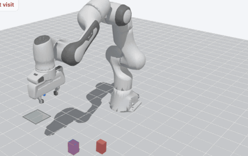
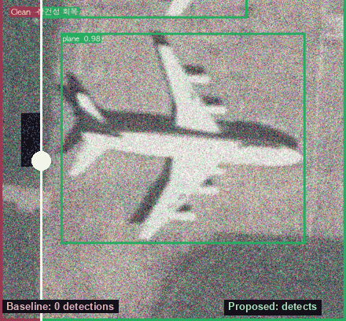
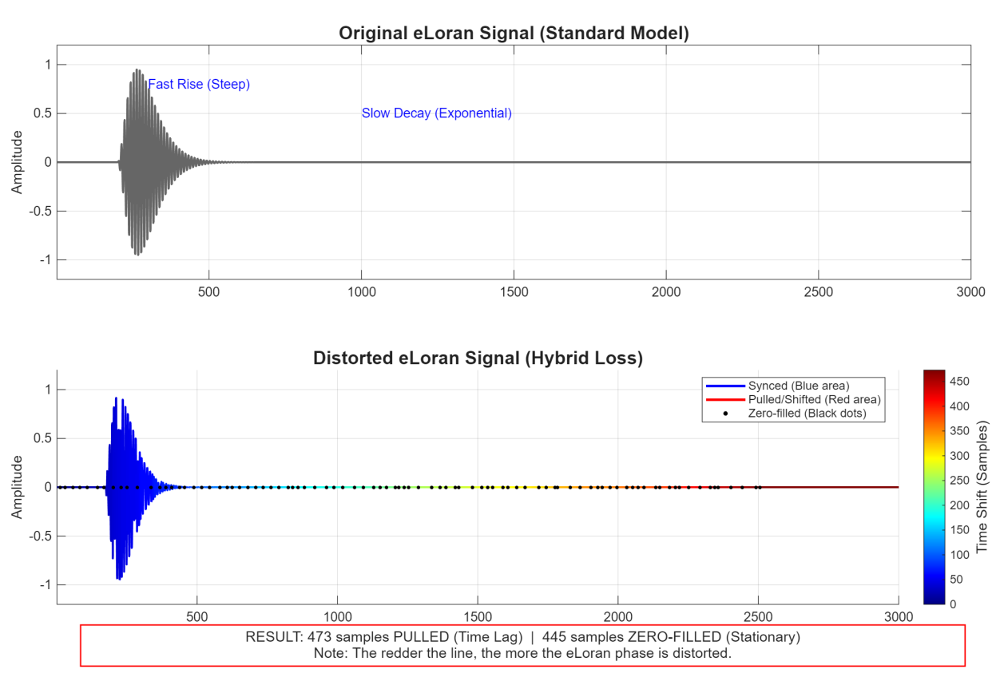

News 소식
- 2026.10Live demo: the same loop on a Franka Panda in MuJoCo, running in the browser — the gripper grasps, carries and places the box through finger contact.
- 2026.10Preliminary study: verify, remember, and decide how much to compute — camera, LLM planner, kinematic check, touch and memory in one loop.
- 2026.08First-author oral talk at the 3rd IAA Conference on AI for Space, Jeju.
- 2026.05First-author talk at the Korea Society of Industrial Information Systems (Spring 2026).
- 2026KCI journal paper (co-author) · patent pending (co-inventor) · KAERI research intern, 6 months.
Preliminary study 예비 연구

Verify, remember, and decide how much to compute
Verified memory removed most LLM calls on familiar scenes at the same success, and an independent touch check stopped wrong memories. When the robot's own state estimate was wrong, checks before and after planning were both fooled.
Research 연구

VLM robot commands gated by forward kinematics
The model proposes; kinematics decides before execution. Giving the VLM joint angles as text raised position error from 165.7 to 276.9 mm.

An LLM wiki system for high-consequence domains
Ambient context injection beat a hybrid-retrieval baseline, yet hallucination persisted even when the correct node was injected directly.

Noise-robust object detection via heterogeneous relational KD
+0.163 mAP50 under satellite sensor noise with an unchanged 22 MB model; 97% of the gain comes from noise training, distillation adds a small, consistent +0.005.

eLoran time-of-arrival under random sample loss
A frequency-domain compensation gained +6.78 dB SNR but added a permanent +1.497 µs TOA bias — SNR was the wrong objective.

AI agent framework for autonomous improvement of an ultrasonic imaging algorithm
One edit per iteration beat several, and without edit history the search collapsed — a verifier and a memory working together.